Have you ever wrestled with confusing documentation while trying to learn a new library or language? The explanations might be sparse, the code examples outdated, or the concepts too advanced for a beginner. It's a common frustration! Take the powerful R visualization library ggplot2. Its complex subject matter and documentation make it a challenge for newcomers.
The documentation for ggplot2 clearly explains this:
If you are new to ggplot2 you are better off starting with a systematic introduction, rather than trying to learn from reading individual documentation pages.
But what if learning about complex subjects could be easier? What if examples were always up-to-date and explanations plentiful? That's where the Elixir ecosystem shines! Imagine a world where package documentation is interactive, intuitive, and beginner-friendly - even when the subject matter is difficult.
Let’s talk about documentation in Elixir-land!
Imagine if you’re visiting your common dependency registry, where you usually would search and find a package and some instructions for how to install it with your project, and of course a link to the package’s main webpage. In Elixir-land, this is where hexdocs.pm enters.
hex is the ordinary Package Manager, but its documentation site is more than a place for installation instructions. Here you can find documentation for Elixir as well as every package available via hex. You would not need to leave hexdocs.pm for reading about more than installation instructions. It contains the API for each package, and in many cases the guides/tutorials for how to use them. And as everything with hexdocs.pm is managed on GitHub, anyone can be on top of any issues with documentation (such as rectifying poor explanations or adding or fixing examples) by issuing PRs.
Some of these API documents also have guides connected to them; occasionally written in a format called livemd. These are markdown files that also works as live documents; meaning they are able to be launched with Livebook (either locally hosted or in cloud) and experimented with. This way, anyone can see how each function and struct can be used.
What is Livebook
Livebook is a format for interactive Elixir notebooks. Like Jupyter, but specialized for Elixir (and Erlang). They are run as web applications. And when you have a Livebook application, you may open any livemd-document in it. You will see a "Run in Livebook" button on these pages.

Clicking it will open a new page where you can enter a URL to your local or cloud hosted Livebook application. You may also configure hexdocs.pm so it remembers your URL.
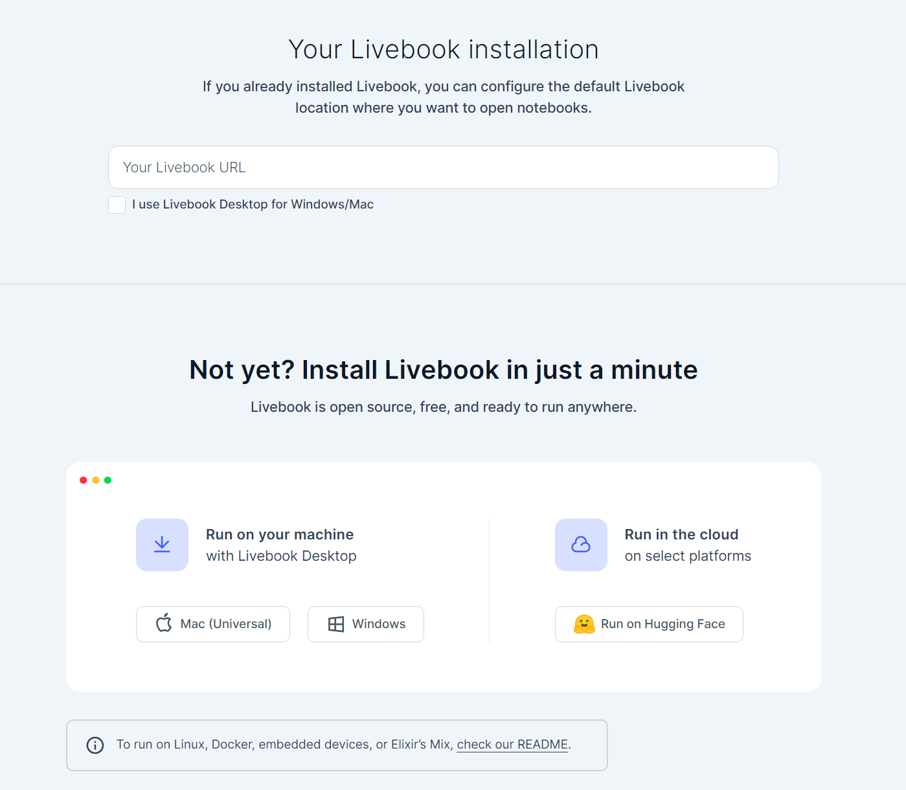
Hosting Livebook on Hugging Face
Hugging Face offers many alternatives for hosting. All it requires is that you've registered an account. Then you can onboard to their free hosting alternative. I'm registered as beercan, and let's see how onboarding would look like for me.
-
Create a new Space: Fill in the basic information for the Hugging Face Space.
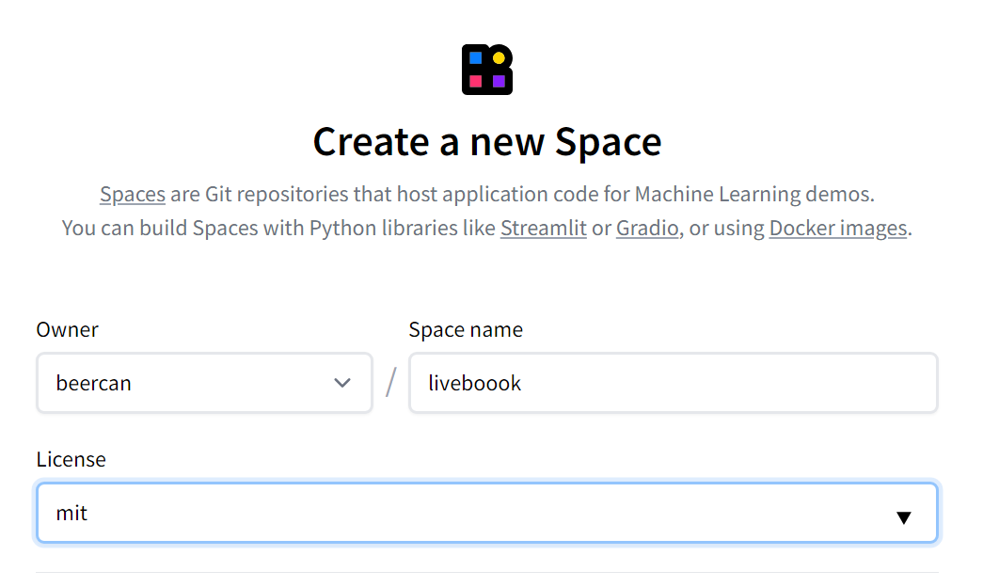 -
Select the Space SDK: Possibilities are endless, as Hugging Face offers a Docker hosting alternative. Select Docker and the Livebook template.
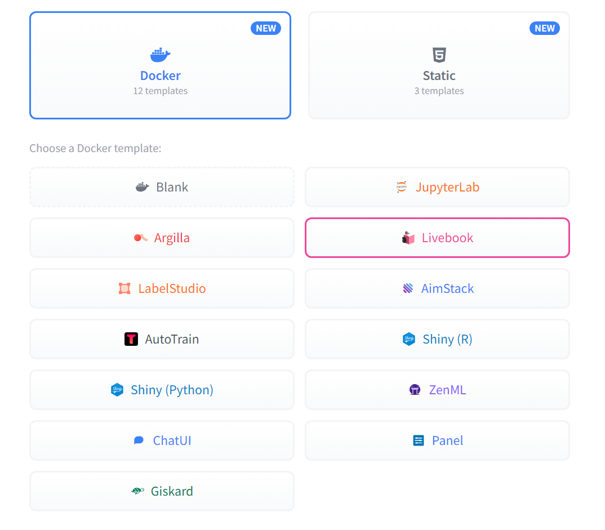 -
Select hardware: We will run a basic setup, which offers 2 virtual CPUs with 16GB RAM. Other, priced, alternatives exists. For most cases, vCPUs are enough. If you want to be training your own models or use LLMs, then the need for the GPU alternatives are there for your choosing. You may also upgrade/downgrade at any point.
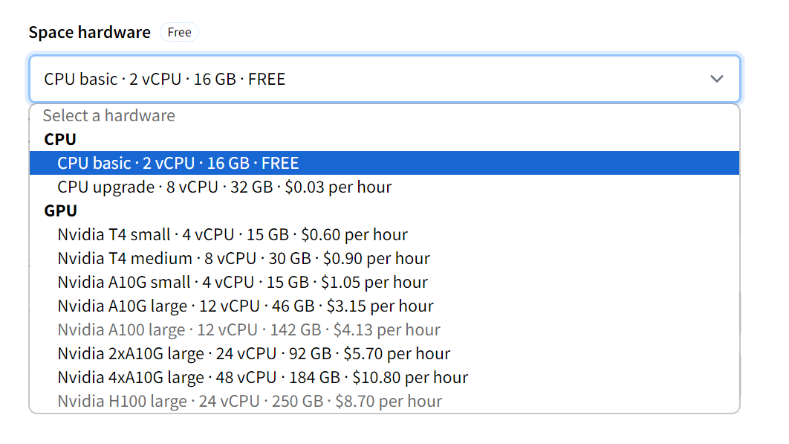 -
Secrets: Select a password for your Livebook application, and then let
XLA_TARGETbecpu. (This should reflect the type of hardware that you are running your application on.)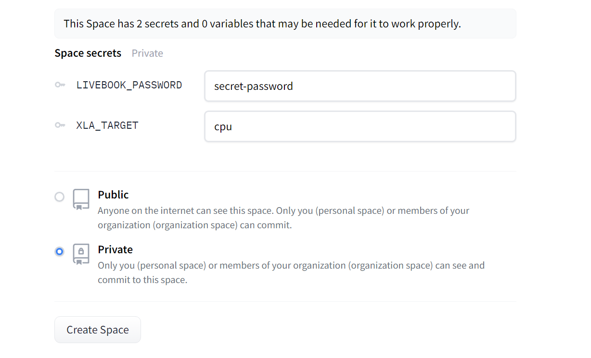 -
Make your Livebook Private or Public: Select whatever you are comfortable with. Start with
Privateif you don't plan to make it visible to anyone. -
Click on
Create Space. This will build the docker image and spin it up. Per default, the container will sleep after 48 hours of inactivity. Any of the paid alternatives allows to change this.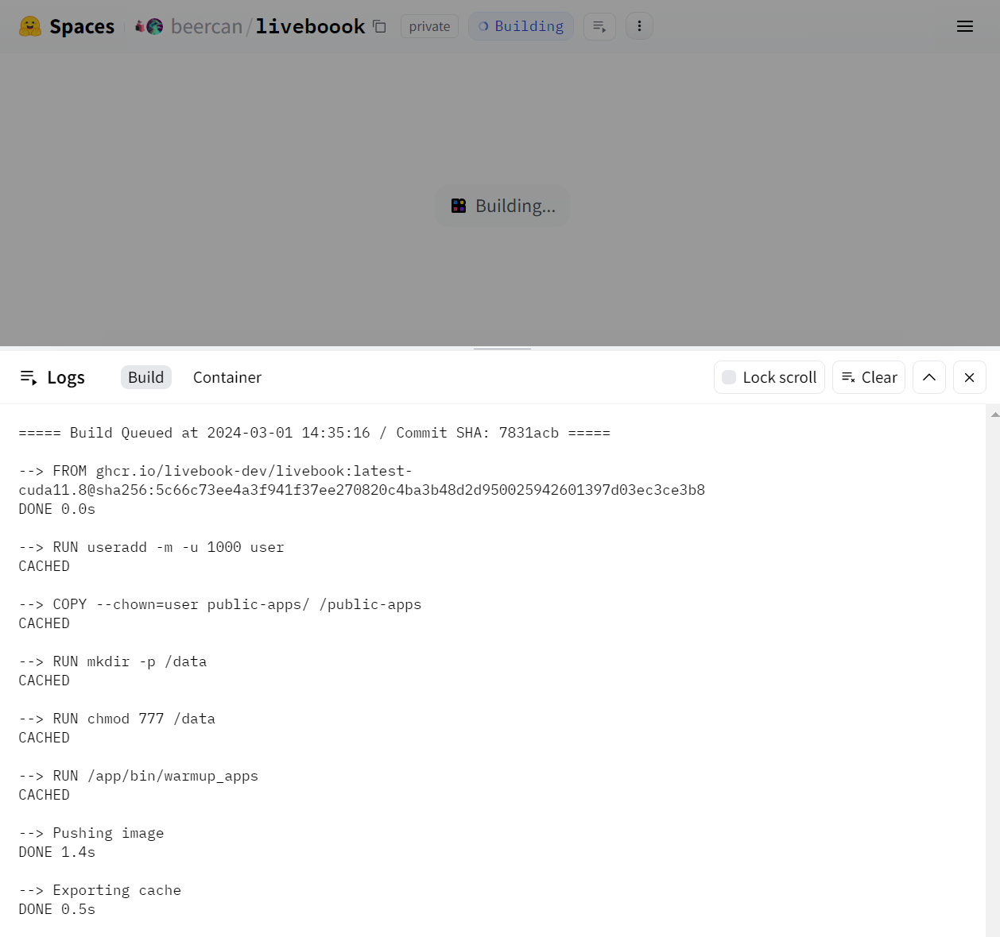
When the image is done building, it will be run, and you will be able to see this screen:
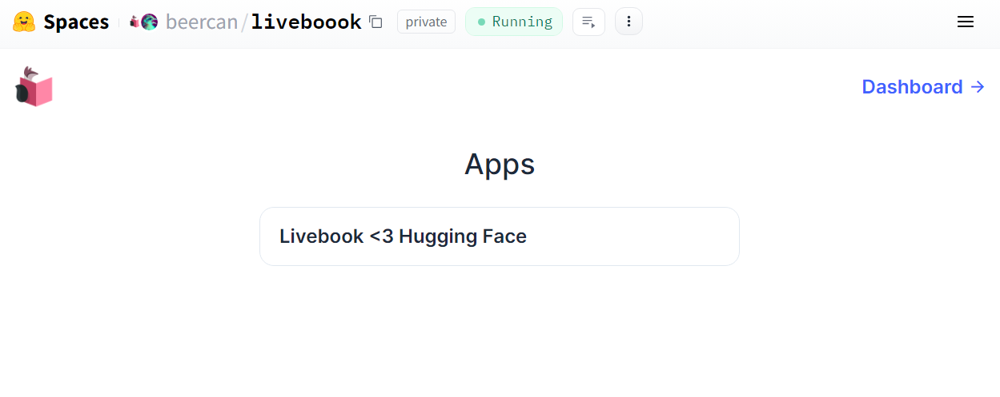
Clicking on "Dashboard" will lead you to an authentication page where you will enter the password that you set earlier. Once that is passed, you can start to explore what Livebook is. It has multiple livebook documents teaching the basics of Elixir, Livebook, and some common Livebook components.
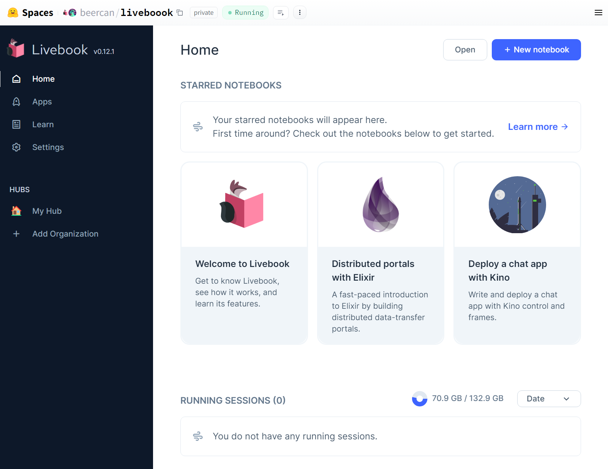
Explore a Livebook document - Bumblebee
Let's head to hexdocs.pm/bumblebee/examples.html#image-classification. Click the cog-icon in the upper right corner to access the settings and check "Run in Livebook". Paste your Livebook URL in the field. It should be something like https://beercan-liveboook.hf.space/, which is https://{username}-{projectName}.hf.space.
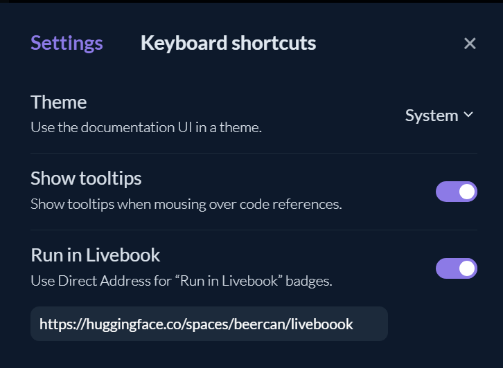
Now when we click on "Run in Livebook" it will initiate a new Livebook document for us in our Huggning Face space. Now we can configure and execute (or evaluate) each Elixir code element in our document. The first Elixir element is where we will install all the dependencies that will be covered in the document. It can be executed by hovering the element and click the Evaluate button that will appear.
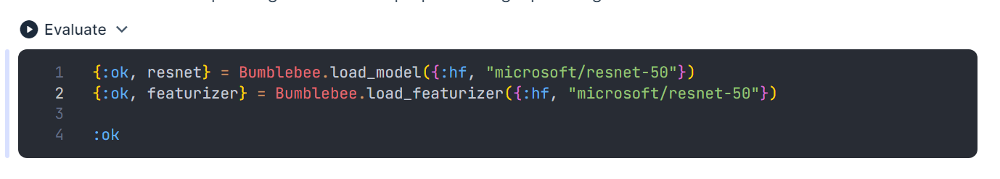
Clicking it will start the code execution. Each element will have access to variables declared in earlier elexir elements, so you may define variables that will be used later in the code.
With Livebook we have access to a library of Livebook components in the form of the Kino dependency. In this example we will see how it renders an Image input-field:
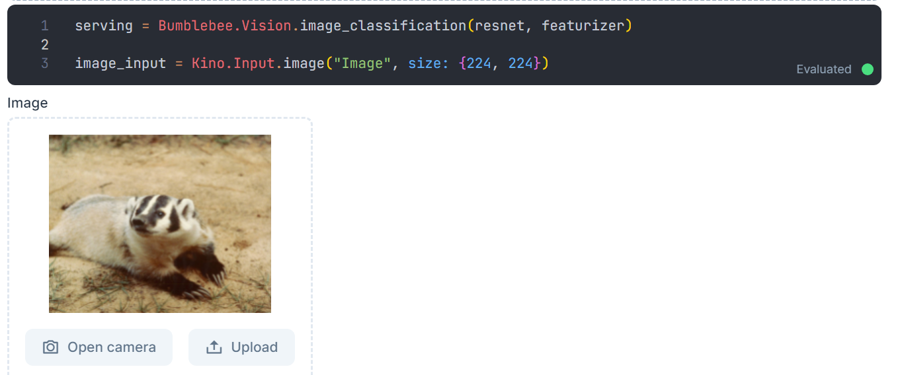
And to wrap this gift that is the Bumblebee library in Livebook, let's run an inference model on the image that was imported and see how it classifies the badger laying on the ground.
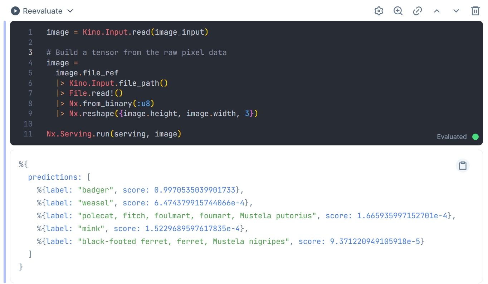
In this case, the model that was used was pretty sure that it indeed was a badger, with a .3% uncertainty about it.
In closing
Remember how easy it was to set up a Livebook environment on Hugging Face? And how the interactive examples in Bumblebee's documentation made understanding the library a breeze? This is just a taste of how Elixir and Livebook can streamline your learning of complex topics. Whether you're an Elixir beginner or a seasoned developer, there's always something new and exciting to discover. Go forth and explore – you might be surprised by the creative possibilities that await!